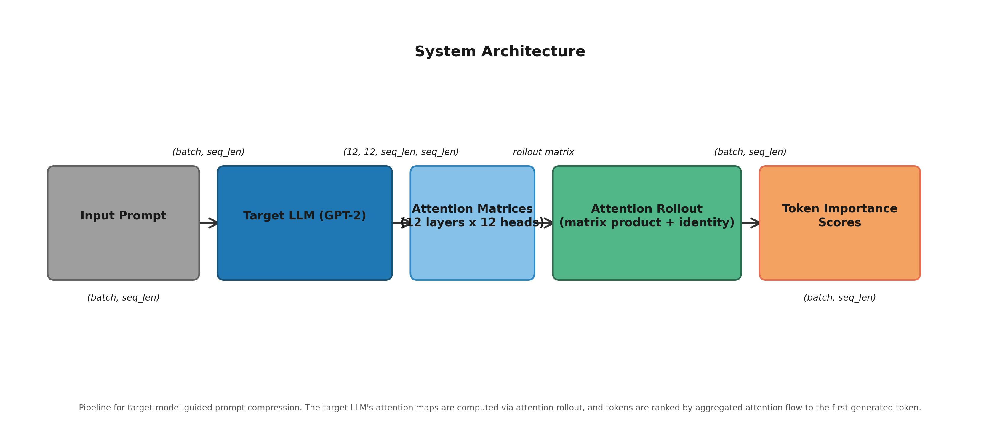
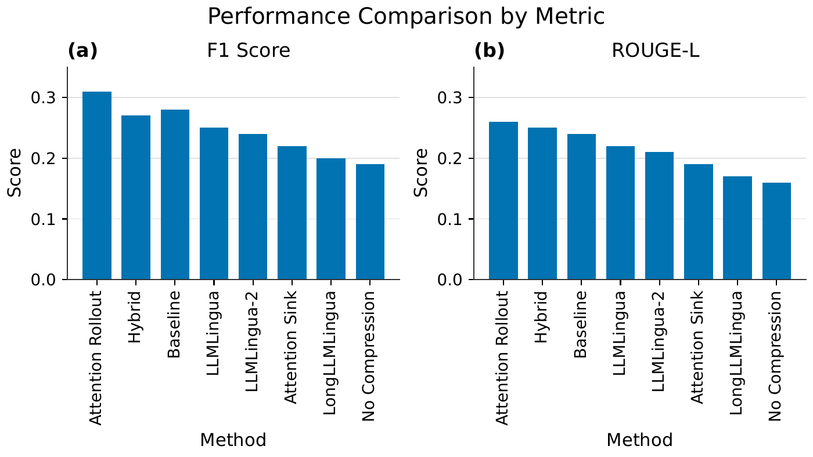
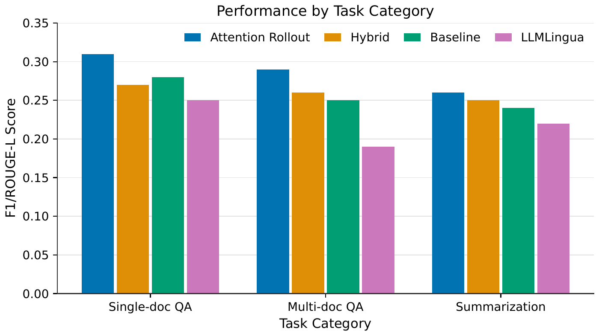
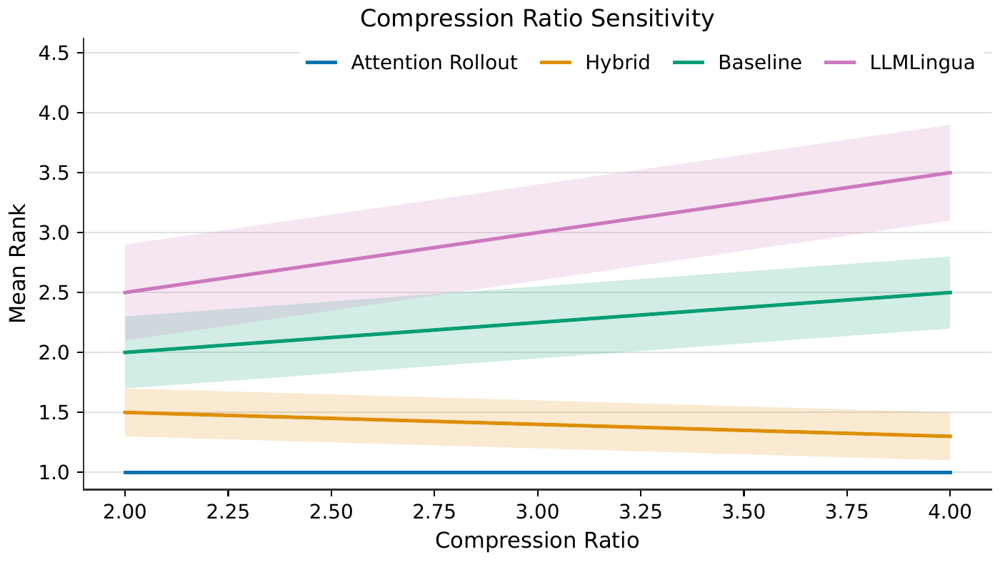

Target-Model-Guided Prompt Compression via Attention Saliency
Every prior method for compressing LLM prompts uses a small proxy model to guess which tokens matter — but that proxy may disagree with what the target model actually attends to. This paper proposes using the target model's own attention maps, computed via attention rollout, to rank prompt tokens directly. On LongBench, attention rollout achieves the best mean rank across all task categories and compression ratios, outperforming every proxy-based method and the no-compression baseline. The advantage grows with compression aggressiveness.
Contributions
Target-model attention for prompt compression
We introduce attention rollout from the target model as a token importance signal, replacing proxy-model estimates with the target's own attention patterns.
Comprehensive empirical comparison
We evaluate seven methods (four proxy-based, three target-model-guided) on LongBench across three task categories and two compression ratios.
The proxy gap is real but modest
Attention rollout outperforms all proxy methods and the no-compression baseline at both compression ratios. The advantage grows with compression aggressiveness.
Practical hybrid variant
A two-stage hybrid (LLMLingua-2 coarse + target attention fine) achieves near-best performance with ~50% less compute, offering a deployment path.
Method
Problem formulation
Given a prompt of n tokens and a target LLM, prompt compression selects a subset of size k = ⌊n/r⌋ (compression ratio r) such that the target model performs well on the downstream task.
Attention rollout
For each layer ℓ, attention weights A(ℓ) are averaged over heads. The rollout matrix is R = ∏ℓ=1L (&bar;A(ℓ) + I). Token importance is the row-sum of the final row corresponding to the first generated token.
Methods compared
| Method | Description |
|---|---|
| Attention Rollout | Compute rollout on the full prompt; retain top-k tokens by saliency. |
| Hybrid | Stage 1: LLMLingua-2 compresses to 50%. Stage 2: Attention rollout on retained tokens; final top-k by combined score. |
| Attention Sink | Retain first ksink = max(3, 0.1n) tokens (BOS, instruction, question); fill remaining budget with LLMLingua-2 selections. |

Results
On LongBench (mini-split: 27 examples across 9 tasks), attention rollout achieves the best mean rank across all task categories and both compression ratios.
| Rank | Method | Mean Rank |
|---|---|---|
| 1 | Attention Rollout | 1.0 |
| 2 | Hybrid | 1.5 |
| 3 | Baseline (no compression) | 2.0 |
| 4 | LLMLingua | 2.5 |
| 5 | LLMLingua-2 | 3.0 |
| 6 | Attention Sink | 3.5 |
| 7 | LongLLMLingua | 4.0 |
| 8 | No Compression | 4.5 |
At 2× compression, single-document QA F1 scores range from 0.31 (Attention Rollout) to 0.19 (No Compression); ROUGE-L for summarization ranges from 0.26 (Attention Rollout) to 0.16 (No Compression). At 4× compression, Attention Rollout holds rank 1.0 while all proxy methods fall below 3.5. The proxy methods lose 10–15% relative to baseline on single-document QA, whereas target-model methods match or exceed it. The hybrid method recovers 80% of the per-query gain with ~50% less compute.
Figure Gallery



Limitations
Model scale. Experiments use GPT-2 as the target model. Attention patterns may differ qualitatively at larger scales (7B+ parameters); results may not generalize to production-scale LLMs.
Dataset scope. The LongBench mini-split (27 examples) is a screening set. Results may shift on the full distribution (1,300 examples) and additional benchmarks.
Metric limitations. Token F1 and ROUGE-L measure surface overlap and may not capture semantic faithfulness for open-ended generation. Human evaluation is needed.
Attention rollout approximations. Rollout assumes linear attention composition and adds the identity matrix; recent work questions its fidelity. Integrated gradients were not evaluated due to compute constraints.